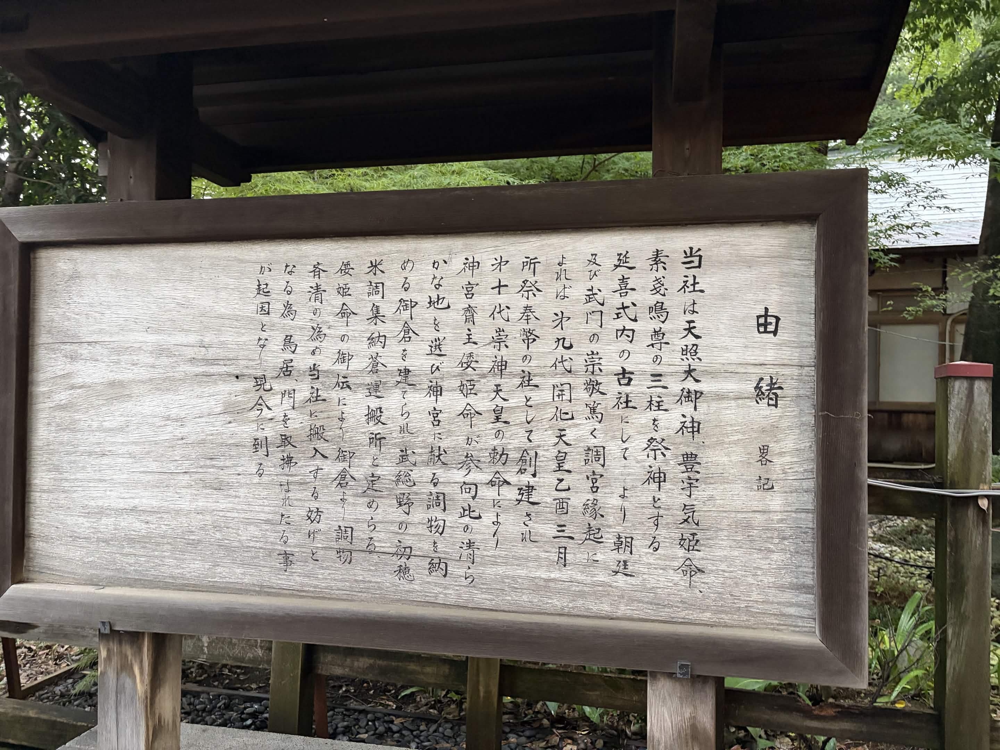
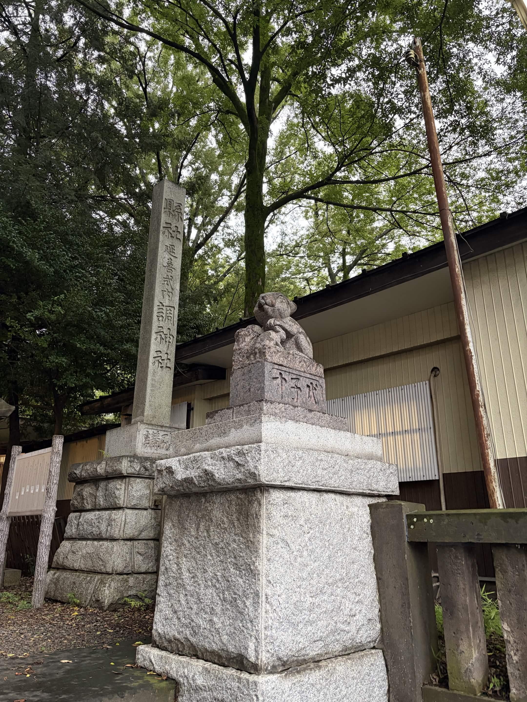
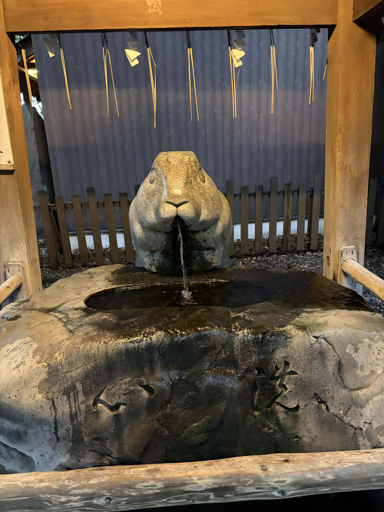
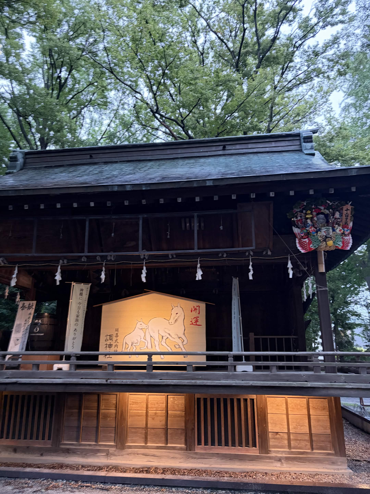

HISTORY & CULTURE
歴史・文教都市 浦和 — うさぎの神社「調神社」
中山道の宿場町として栄えた浦和。その総鎮守として今も親しまれる調(つき)神社は、日本でも珍しい「うさぎの神社」として知られています。
中山道の宿場町として栄えた浦和。その総鎮守として今も親しまれる調(つき)神社は、日本でも珍しい「うさぎの神社」として知られています。
浦和駅からほど近い参道の先に、調(つき)神社はあります。社名の「調(つき)」が 「月」に通じることから、古くから月の使いとされる「うさぎ」が神様の使者として 祀られてきました。全国的にも珍しく、狛犬の代わりに狛兎が境内を守っています。 中山道浦和宿の総鎮守として、江戸時代から旅人の信仰を集めてきました。

調神社の創建は崇神天皇の時代と伝わるほど古く、伊勢神宮に納める調物(みつぎもの)を この地に集めたことが社名の由来といわれています。中山道浦和宿の人々からは 「つきのみや」と呼ばれ、親しまれてきました。

調(つき)が「月」に通じることから、月にうさぎがいるという言い伝えと結びつき、 うさぎが神様のお使いとされるようになりました。参道や拝殿には、 うさぎの意匠が随所に施されています。

参拝前に手と口を清める手水舎の水口にも、うさぎの姿が刻まれています。 狛兎だけでなく、こうした細部にまでうさぎのモチーフが使われているのが 調神社の特徴です。

中山道浦和宿の総鎮守として旅人を見守ってきた調神社には、今も 地域の人々の参拝が絶えません。初詣や祭りの時期には特に多くの人で賑わい、 「うさぎの神社」として遠方から訪れる参拝者もいます。
江戸日本橋から4番目の宿場町として整備され、人・モノ・情報が行き交う要衝に。定期市も開かれ、周辺農村の物流拠点として発展しました。
廃藩置県によって埼玉県が誕生し、浦和に県庁が置かれます。以後、行政の中心地として都市機能の整備が進みました。
師範学校をはじめとする教育機関が次々と開設され、多くの文化人・芸術家も居を構えるようになり、独特の文教的な気風が育まれました。
浦和市・大宮市・与野市が合併し、さいたま市が誕生。浦和はその中心区の一つとして、歴史的な街並みを保ちながら新たな役割を担っています。
さいたま市役所や裁判所などの行政機能に加え、多くの学校・美術館・文化施設が集まり、落ち着いた住宅地としても人気を集めています。
創建は古く、狛犬の代わりにうさぎが鎮座することで知られる神社。中山道浦和宿の総鎮守として、今も地域の信仰を集めています。
かつて埼玉県庁が置かれた界隈。行政の中心地として発展した歴史を今に伝える建物や記念碑が点在しています。
平安時代の創建と伝わる古刹。四季折々の花が咲く庭園があり、街の喧騒から少し離れた場所にあります。
浦和の成り立ちや文教都市としての歩みを紹介する資料が充実。街歩きの前に立ち寄ると理解が深まります。
江戸時代から続く浦和のうなぎ文化もあわせてお楽しみください。